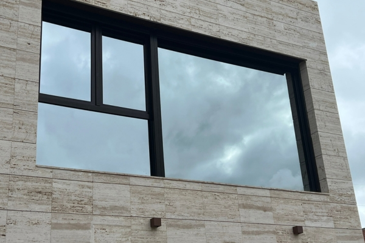
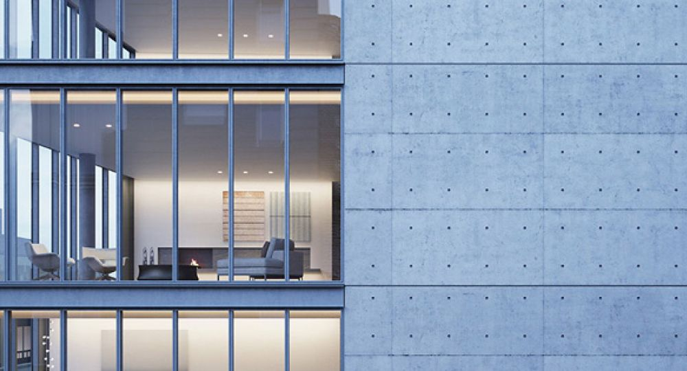

Une clarté parfaite pour une luminosité incomparable. Desservant Lévis, Québec et les environs.
Contactez-nousDesservant Québec et ses alentours, Pro-Clean HC transforme vos vitres en véritables fenêtres sur le monde. Notre expertise garantit une transparence sans égale et une luminosité optimale dans votre espace.
Parce que chaque jour mérite d'être baigné de lumière naturelle, nous vous offrons un service professionnel, minutieux et efficace. Des vitres propres ne sont pas seulement esthétiques — elles améliorent votre qualité de vie et la valeur de votre propriété.
Que vous habitiez à Lévis, Québec, Beauport, Charlesbourg ou Sainte-Foy, notre équipe se déplace chez vous pour un résultat impeccable, garanti sans traces.

Profitez d'un environnement plus lumineux et accueillant grâce à un nettoyage de vitres réalisé avec précision et souci du détail.
Un nettoyage professionnel de vitres ne se limite pas à l'esthétique. Il permet également de prolonger la durée de vie de vos fenêtres en éliminant les résidus corrosifs et en protégeant les surfaces contre les éléments naturels comme la pluie acide, le pollen et la poussière.
De plus, des fenêtres propres améliorent considérablement la luminosité naturelle de votre intérieur, ce qui contribue à réduire votre consommation d'énergie en diminuant le besoin d'éclairage artificiel pendant la journée.
Les produits commerciaux vendus en épicerie laissent souvent des résidus chimiques qui créent un voile sur le verre. Notre équipe utilise des solutions professionnelles biodégradables et des techniques de raclette qui garantissent un fini cristallin, sans traces ni stries.
De plus, le nettoyage des fenêtres en hauteur ou difficiles d'accès nécessite un équipement spécialisé et une formation en sécurité que seuls les professionnels possèdent.
Les dépôts minéraux, les résidus de pollen et la saleté accumulée peuvent endommager le verre de façon permanente avec le temps. Un nettoyage régulier par des professionnels prévient ces dommages coûteux et maintient l'intégrité de vos fenêtres.
Au Québec, les changements de saison — neige, pluie verglaçante, chaleur estivale — sollicitent particulièrement vos vitres. Un entretien professionnel saisonnier est la meilleure façon de les protéger.
Pour maintenir une clarté optimale, nous recommandons un nettoyage professionnel de vos vitres au minimum deux fois par année — idéalement au printemps et à l'automne. Cependant, plusieurs facteurs peuvent nécessiter un nettoyage plus fréquent :
Notre équipe peut établir un calendrier d'entretien personnalisé selon votre situation. Contactez-nous pour une évaluation gratuite.

Techniques professionnelles garantissant une clarté cristalline.
Solutions biodégradables respectueuses de l'environnement.
Personnel formé pour tous types de fenêtres et hauteurs.
Respect des rendez-vous et travail efficace.
Faites confiance à Pro-Clean HC INC pour redonner éclat et clarté à vos vitres. Chaque détail est pris en compte pour garantir une satisfaction totale. Soumission gratuite et sans engagement.
Contactez-nous